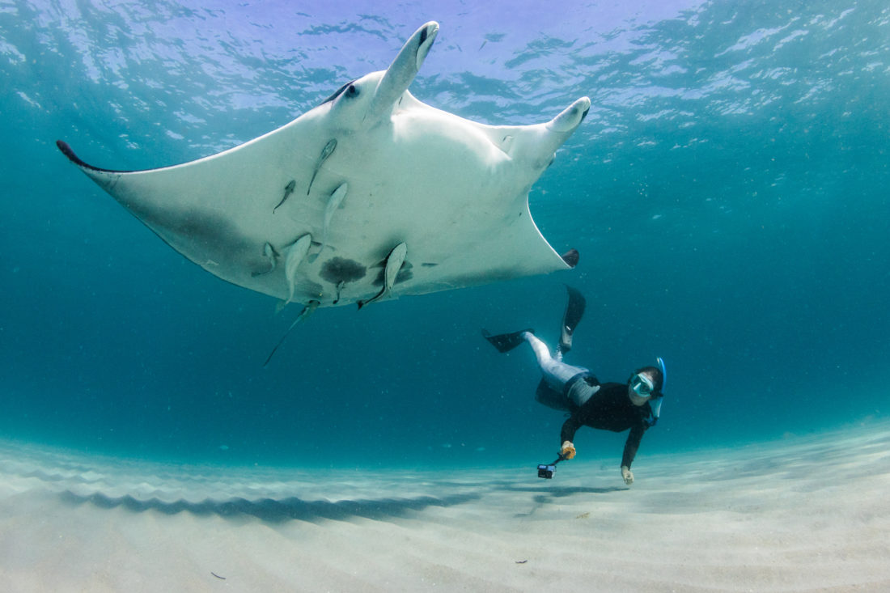
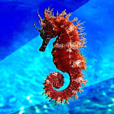

Marine Life Conservation Status
| Marine Species | Conservation | Habitat | Human Impact | |
|---|---|---|---|---|
 |
Blue Whale
|
Deep Ocean | Ship Strikes, Noise Pollution | |
 |
Green Sea Turtle
|
Coral Reefs, Coastal Waters | Plastic Pollution, Habitat Loss | |
 |
Coral Reef
|
Tropical Waters | Climate Change, Ocean Acidification | |
 |
Great White Shark
|
Coastal and Open Ocean | Overfishing, Habitat Degradation | |
 |
Giant Clam
|
Coral Reefs | Harvesting, Water Quality | |
 |
Dolphin
|
All Oceans | Bycatch, Pollution | |
|  |
Manta Ray
|
Tropical Waters | Fishing Nets, Tourism | |
|  |
Seahorse
|
Seagrass Beds | Traditional Medicine Trade | |